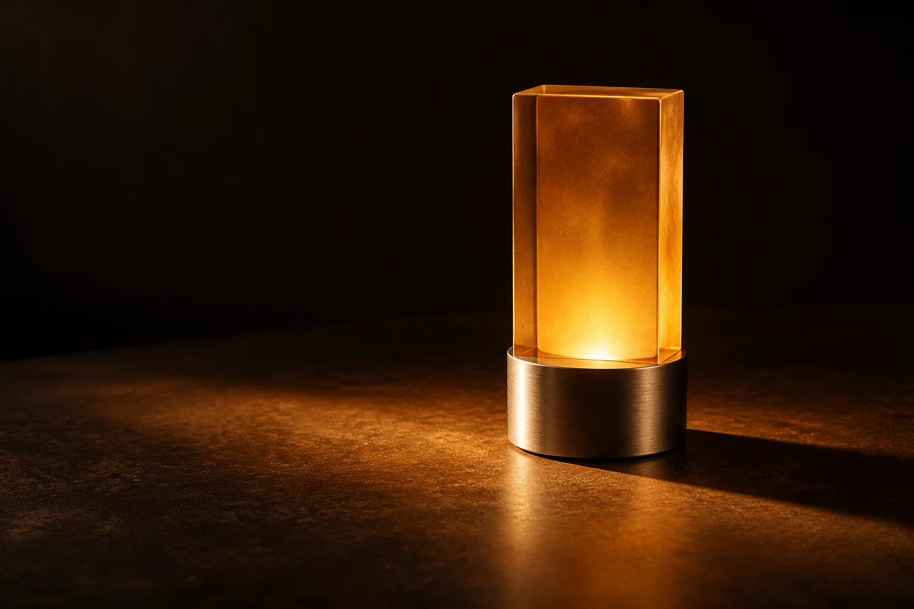
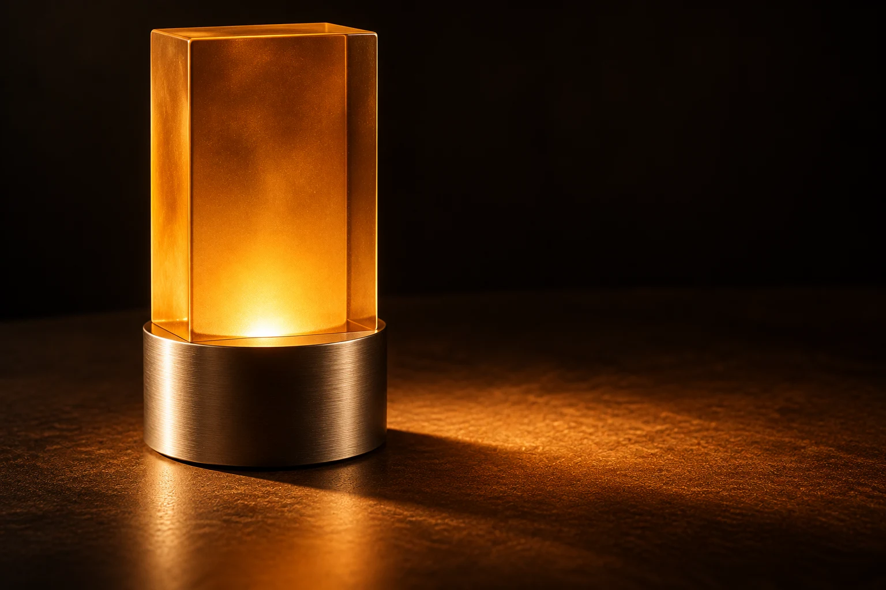

5 SECONDS
A first line of light
Let the edge of the base emerge from the dark surface.
Production: Confirm reflection control and the hero product condition.
Product film / concept treatment
PROPOSED LENGTH / 00:45
PROPOSED SHOOT / 1 DAY
STATUS / UNPRODUCED CONCEPT

The intention
Introduce a small amber-diffuser light through material, form and the atmosphere it creates, without inventing product performance claims.
For whom: Design-conscious customers encountering an unfamiliar task light.
A line of light first reveals the aluminium base. The amber surface catches it, then the whole object becomes readable. A change of view shows how the glow falls on the table. We close on a still, complete form.
A controlled studio setup, measured camera moves and time for reflections. The object leads the edit; graphics, if agreed, support identification rather than make unsupported claims.
An annotated sequence
Choose a shot to read its direction. Two concept stills illustrate the six proposed beats; this is a storyboard reader, not film or audio playback.

SHOT 01 / 00:00–00:05
Let the edge of the base emerge from the dark surface.
PRODUCTION NOTEConfirm reflection control and the hero product condition.
Landscape crop of an illustrative still. Dashed inset is a composition guide, not a delivery specification.
Let the edge of the base emerge from the dark surface.
Production: Confirm reflection control and the hero product condition.
Move from brushed metal to the edge of the amber diffuser.
Production: A close view needs a separate focus and lighting setup.
Open the frame until the complete object can be understood.
Production: Hold the full silhouette clear of any proposed title area.
Show the pool of amber light stretching across the tabletop.
Production: Present atmosphere without claiming an unmeasured brightness or output.
Use a second angle to connect the base, diffuser and glow.
Production: Record alternate framing for a vertical edit during the setup.
Finish with one complete, quiet product frame.
Production: Leave space for the approved product name in a real commission.
Proposed direction only: a restrained original sound texture, to be commissioned and cleared separately. No music track, recording or usage licence is included here.
One proposed studio day for a single unbranded concept object and one tabletop set. A real project would require an approved sample, handling instructions and final product facts.
Proposed 45-second hero film. Alternate durations and landscape/vertical versions form a separately approved export list. No technical product specifications are claimed.
The TXT includes the narrative, timed shot list, proposed scope and the concept-project boundary.